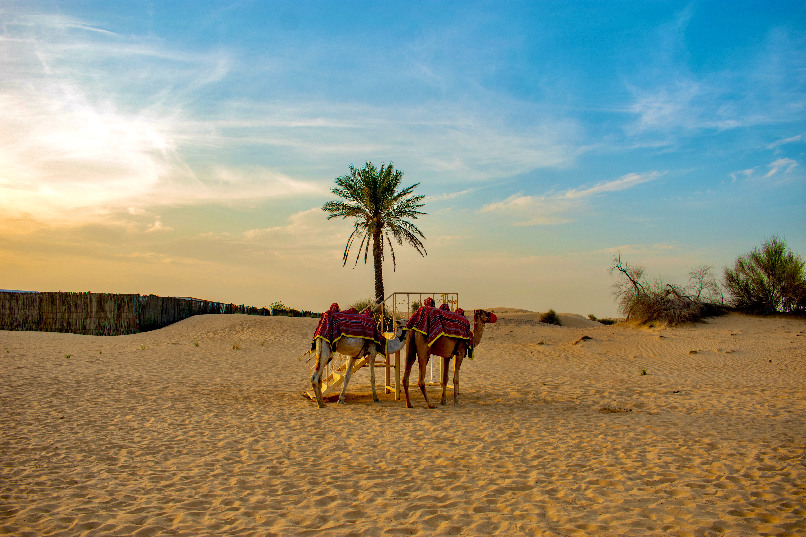
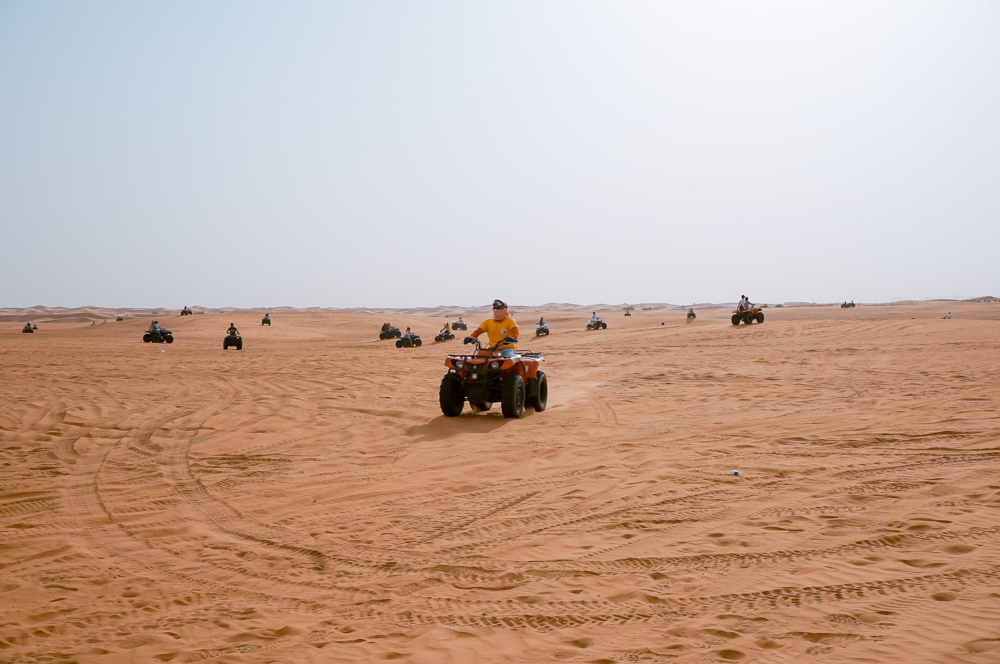

Dubai is one of the most prosperous and modern of the Emirates in the UAE. The city is bordered by Abu Dhabi in the south, Sharjah in the northeast, and the Sultanate of Oman in the southeast. Situated within the Arabian Desert, the city has a unique topography. Dubai’s landscape is mostly formed of sandy deserts along with gravel-filled deserts found the southern region of the UAE. Its sand is clean, white, and fine, consisting of crushed shell and coral. Dubai desert safari in the surrounding sandy desert is a thrilling and electrifying experience. It is very difficult to choose amongst a variety of adventurous desert trips. The journey starts from pick up point boarding into 4x4 wheel drive.
Morning Desert Safari: Due to a busy schedule, many people don’t get time to plan for evening safari. Therefore, they can enjoy morning desert safari which offers interesting adventure tour. The desert safari provides about 20 minutes of exciting dune bashing along with electrifying camp journey where you can enjoy quad biking, camel ride and sand skiing. Morning safari can vary according to your package tour. On average, some of the companies offer about 2-hour package journey. It is the right option for those who are not interested in dinner and camping.
Evening Desert Safari: It’s a must-do activity if you want to memorise something for lifelong. If you are planning to visit Dubai, try out fun and excitement by organizing evening desert safari. Starting in the afternoon, you will have to rest at the first destination near a camel farm. Get a chance to experience the sunset in the ocean of desert, enjoy camel ride and sandboarding. Try out a beautiful henna design on hands and feet. Indulge yourself in a mood of celebration with delicious barbecue and shisha. Watch a belly dancer performing on Arabic tunes right at the campsite.
